Big Data en Astronomía
La astronomía moderna es, en buena medida, un problema de datos. Esta clase recorre cómo se llegó hasta aquí: del ojo a la placa fotográfica, de la placa al CCD, y del CCD a cámaras de gigapíxeles que llenan petabytes. Dos curvas exponenciales —la ley de Moore y el área colectora de los telescopios— se cruzan con surveys gigantes (SDSS, LSST/Rubin, SKA), archivos públicos como servicio, computación de alto rendimiento, observatorios virtuales, machine learning y ciencia ciudadana.
¿Qué hace un astrónomo cuando los telescopios producen más datos de los que cualquier persona podría mirar en mil vidas? La diapositiva titular de esta clase no dice «espectroscopía» ni «fotometría»: dice Big Data. El hilo es la transición desde una astronomía artesanal —observar a ojo, grabar en placas de vidrio, revisarlas con lupa buscando «agujas en pajares»— a una astronomía industrial donde una sola cámara (la de Vera Rubin/LSST, 3,2 gigapíxeles) genera por noche lo que antes era el catálogo de toda una carrera. Para un ingeniero/informático, esta clase es terreno conocido: volumen, velocidad, variedad y acceso de los datos; pipelines, almacenamiento, cómputo paralelo, bases de datos y aprendizaje automático. La astronomía se vuelve una disciplina de ciencia de datos aplicada al cielo.
Esta clase no cuenta con transcripción de audio (en ff/ solo existen las clases 1 a 4). Los apuntes se reconstruyeron a partir de las diapositivas del PDF Modulo_II_Clase_5_.pdf y se complementaron con conocimiento del dominio. Donde el texto va más allá de lo que muestra la lámina, se marca como inferencia o material externo; no se atribuyen frases textuales al docente. Ante cualquier duda, primar las diapositivas y fuentes académicas.
Del ojo al CCD: historia de los detectores
Cuatro etapas: a ojo, método de grabación (placas), digitalización y computación.
La lámina de historia ordena la observación astronómica en cuatro grandes etapas, que también son cuatro modos de guardar la información:
- A ojo: el primer «detector» fue la retina. Funciona razonablemente bien en el verde (el peak del Sol), pero su eficiencia cuántica es bajísima, no integra (no «acumula» luz por horas) y no deja registro: lo que ves se pierde salvo que lo dibujes.
- Método de grabación: la placa fotográfica de vidrio. Por primera vez el dato queda archivado en un soporte físico que se puede volver a mirar, medir y comparar. Es ineficiente (~1 % de los fotones), pero permanente.
- Digitalización: el detector electrónico (CCD y luego CMOS) convierte fotones en números. El dato nace ya como un arreglo de píxeles que un computador puede procesar.
- Computación: hoy el cuello de botella no es captar la luz, sino procesar, almacenar y analizar el torrente de datos. La astronomía se vuelve ciencia de datos.
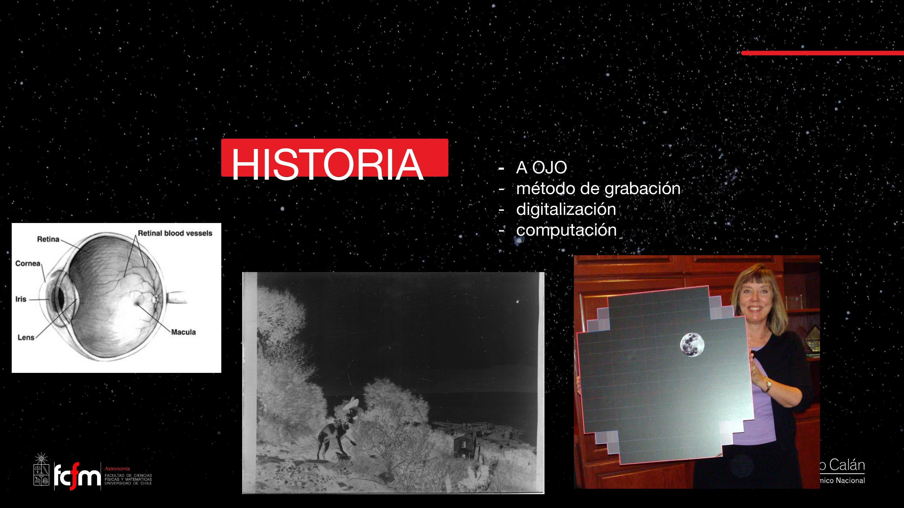
Es la misma evolución de cualquier sistema de adquisición: sensor analógico → soporte de registro → digitalización (ADC) → procesamiento. Cada salto cambia el cuello de botella. Mientras el problema fue «captar señal», la innovación estuvo en el detector; cuando el detector dejó de ser el límite, el problema se trasladó a I/O, almacenamiento y cómputo: exactamente lo que hoy llamamos big data.
Placas: «agujas en pajares»
La era de las placas: archivos enormes que había que revisar a mano, buscando lo raro.
Antes de los detectores digitales, una observación quedaba en una placa de vidrio que luego se revisaba con lupa sobre una mesa de luz. El problema de fondo —que no ha cambiado— es buscar «agujas en pajares»: en un campo con miles de estrellas y galaxias, encontrar el objeto que cambió, que se movió o que simplemente no estaba antes. Esa tarea, hecha ojo a ojo y placa a placa, era lentísima y dependía de la paciencia (y los prejuicios) del observador.
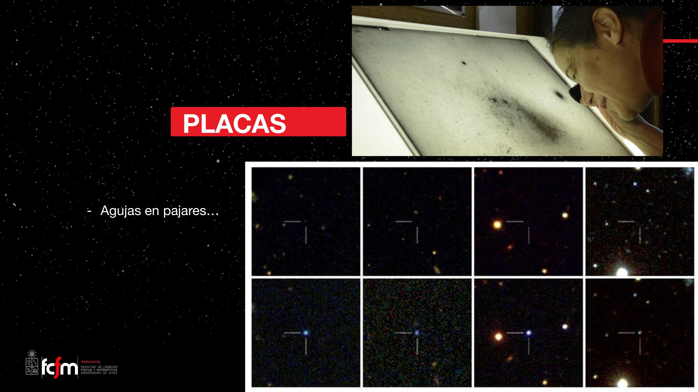
«Encontrar la aguja» es el mismo problema de la señal a ruido de la clase anterior: decidir si lo que vemos en un píxel es real o es ruido. Lo que cambia con el big data es la escala: ya no es una placa, son millones de imágenes por noche. La estadística de Poisson () sigue gobernando cuándo creerle a una detección.
Dos exponenciales: Moore y área colectora
El big data astronómico nace del cruce de dos crecimientos exponenciales que se potencian.
El centro conceptual de la clase: la astronomía explota en datos porque dos curvas crecen exponencialmente al mismo tiempo.
- La ley de Moore: el número de transistores por chip se duplica aproximadamente cada ~2 años. Más cómputo, más memoria, más píxeles por sensor y por menos dinero.
- El área colectora de los telescopios: desde el de Galileo (1609, unos centímetros) hasta el E-ELT (~39 m), el área crece varios órdenes de magnitud a lo largo de los siglos. Más área = más fotones = poder ver más lejos y más débil.
Cuando un detector que crece como Moore se monta en un telescopio cuya área también crece, el volumen de datos se dispara como el producto de ambas tendencias. Un eje logarítmico que sube como una recta es la firma de un crecimiento exponencial (igual que en cualquier gráfico de capacidad de cómputo o almacenamiento).
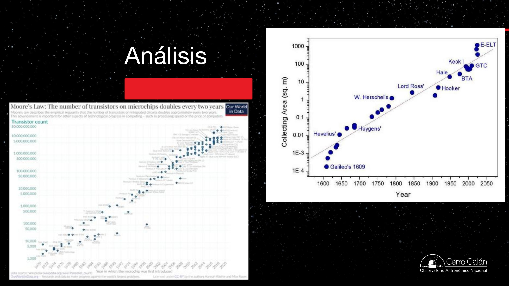
Una recta en un gráfico semilog significa , con el tiempo de duplicación. Es la misma matemática del interés compuesto, del crecimiento de tráfico o del tamaño de datasets. Pensar en «órdenes de magnitud» (potencias de 10) en vez de números absolutos es el reflejo de ingeniería que esta clase entrena.
Digitalización: de fotones a bytes
Convertir lo físico en datos: gigapíxeles, prefijos decimales vs binarios y el peso real de una imagen.
Digitalizar es pasar «de físico a datos». Una cámara astronómica moderna es un mosaico de muchos sensores. El ejemplo de la lámina es la cámara de LSST (hoy Observatorio Vera C. Rubin): 189 sensores de 16 Mpx cada uno, que suman ~3,2 gigapíxeles. Cada exposición es una imagen colosal, y cada píxel pesa varios bytes.
Para medir ese volumen hay que manejar los prefijos de unidades. Aquí aparece una sutileza muy de informática: decimal vs binario. En base 10, «kilo» es ; pero en computación se usa la potencia de 2 más cercana, . La diferencia es pequeña en kilobytes (2,4 %) pero se acumula: en el rango peta/exa supera el 10 %.
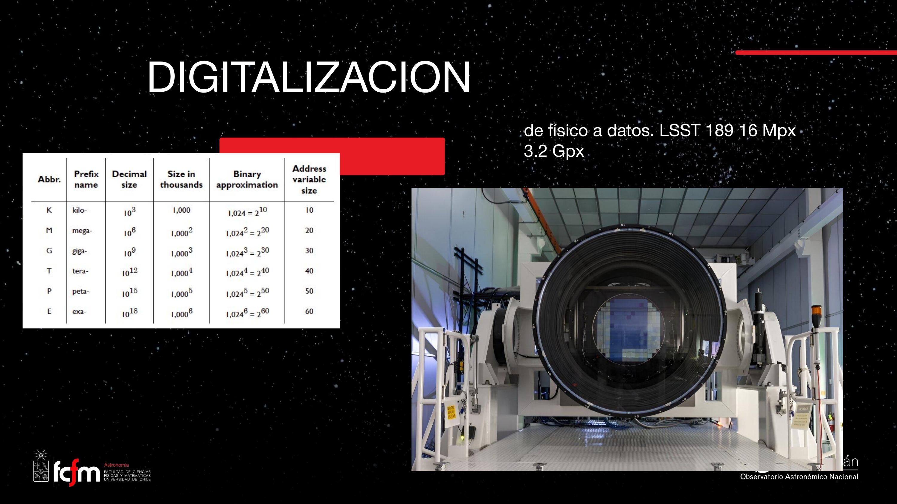
¿Cuántos datos? El zoológico de surveys
De terabytes a exabytes: el volumen de datos crece con cada generación de surveys.
Un survey es una campaña que «barre» sistemáticamente una región del cielo (o todo el cielo) con un conjunto fijo de filtros y reglas. La lámina «crecen los datos» pone cifras a la escalada generacional:
| Proyecto (survey) | Volumen de datos |
|---|---|
| DPOSS — Palomar Digital Sky Survey | 3 TB |
| 2MASS — Two Micron All-Sky Survey | 10 TB |
| GBT — Green Bank Telescope | 20 PB |
| GALEX — Galaxy Evolution Explorer | 30 TB |
| SDSS — Sloan Digital Sky Survey | 40 TB |
| SkyMapper — Southern Sky Survey | 500 TB |
| PanSTARRS | ~40 PB esperados |
| LSST — Vera C. Rubin | ~200 PB esperados |
| SKA — Square Kilometre Array | ~4,6 EB esperados |
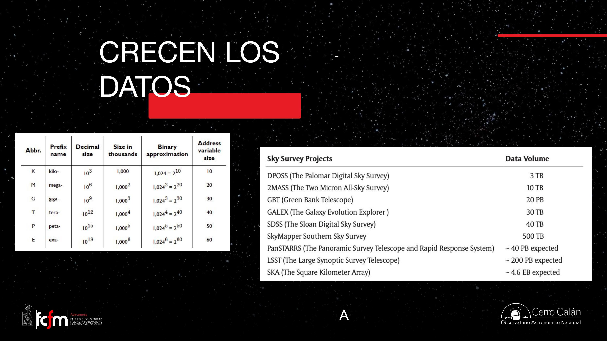
¿Por qué tantos surveys distintos? Porque cada uno cubre una combinación distinta de área de cielo, longitud de onda, profundidad (magnitud límite) y número de objetos. Las láminas de «por qué» y «más sensible, más área» muestran a cada survey como un punto en estos espacios de compromiso: nadie cubre todo a la vez.
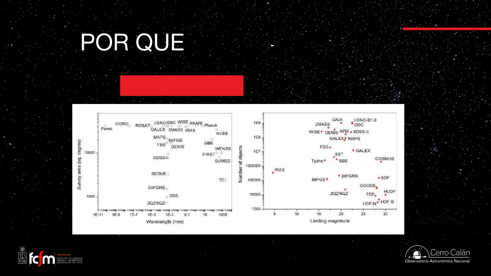
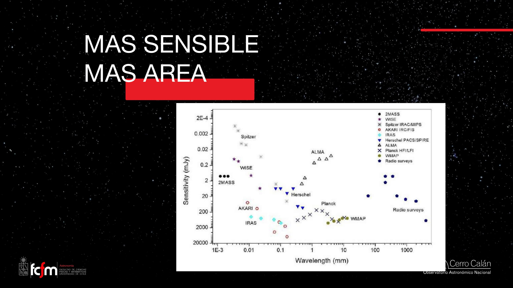
Surveys modernos y LSST/Vera Rubin
SDSS, DECam, DESI y, sobre todo, el Observatorio Vera Rubin: una película del cielo entero cada pocas noches.
La lámina de surveys enumera la genealogía moderna: SDSS (el survey que «miró todo el cielo» y estandarizó filtros), DECam (Dark Energy Camera, en Cerro Tololo, Chile), DESI (espectroscopía masiva con miles de fibras) y LSST en el Observatorio Vera C. Rubin (Cerro Pachón, Chile). Observar hoy es «curar datos»: definir estrategia, calibrar, versionar y publicar catálogos.
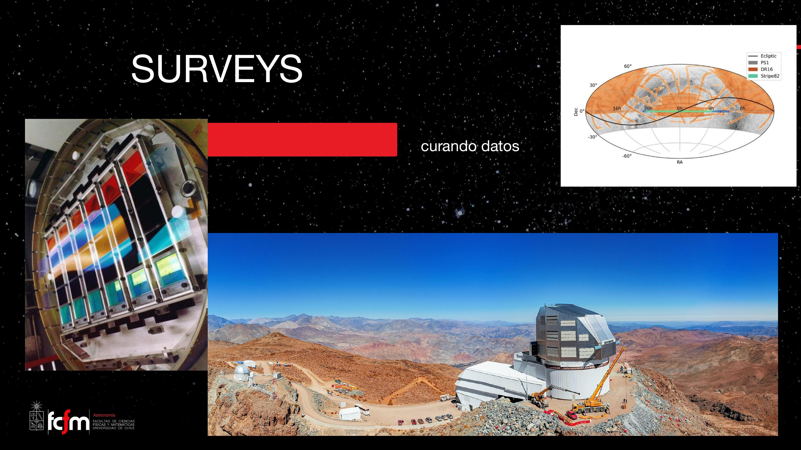
El LSST (Legacy Survey of Space and Time) es el caso paradigmático. Su estrategia Wide-Fast-Deep apunta a fotografiar el cielo austral completo repetidamente durante 10 años, acumulando cientos de visitas por región. El resultado es una verdadera «película» del universo: no una foto, sino la variabilidad del cielo en el tiempo (supernovas, asteroides, estrellas variables). Esto requiere comparar cada imagen nueva con un modelo del cielo y emitir alertas de lo que cambió, millones por noche.
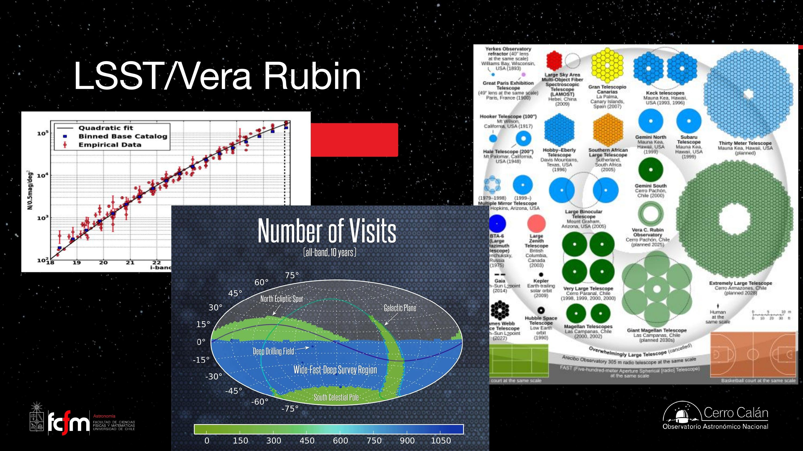
El big data también trae problemas nuevos de calidad del dato. Las constelaciones de satélites (como Starlink) dejan trazas brillantes que cruzan las imágenes y contaminan los datos. Es un caso real de ruido sistemático introducido por la actividad humana, que hay que detectar y enmascarar en la pipeline.
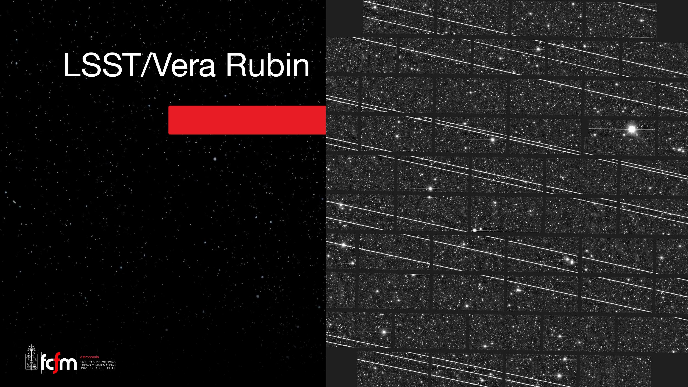
LSST es esencialmente un sistema de stream processing: ingiere imágenes, las compara contra una referencia (diferencia de imágenes), detecta cambios y emite ~10 millones de alertas por noche en tiempo casi real (atribución externa, cifra de planificación del proyecto). Filtrar esas alertas requiere brokers y clasificadores automáticos: es Kafka aplicado al cielo. Las trazas de satélites son, en términos de ML, outliers sistemáticos a enmascarar.
Radio e interferometría: correlación
En radio el dato no es una imagen: es señal que hay que correlacionar entre antenas para sintetizar un telescopio gigante.
En radioastronomía, «no sólo imágenes»: una antena entrega una señal temporal, no una foto. La resolución angular de un telescopio va como ; como las ondas de radio tienen enorme, harían falta antenas imposiblemente grandes. La solución es la interferometría: combinar muchas antenas separadas y correlacionar sus señales, de modo que el conjunto se comporta como un telescopio del tamaño de la distancia entre antenas.
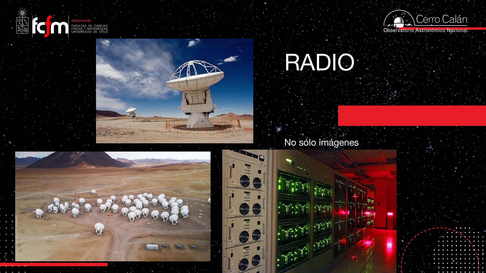
La operación clave es la correlación, que puede ser entre antenas de un mismo sitio (como ALMA) o entre estaciones repartidas por el planeta:
- VLBI (Very Long Baseline Interferometry): antenas en distintos continentes; la línea de base llega a ser el diámetro de la Tierra.
- EHT (Event Horizon Telescope): una red VLBI que sintetizó un telescopio del tamaño del planeta para obtener la primera imagen de un agujero negro.
- SKA (Square Kilometre Array): el futuro gran arreglo, con un área colectora efectiva cercana al kilómetro cuadrado y volúmenes de datos en exabytes.
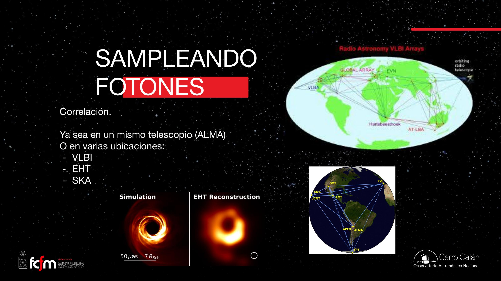
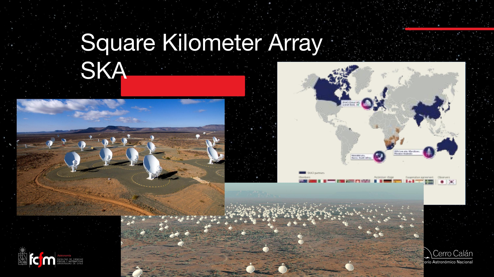
El correlador es un computador de propósito especial que calcula correlaciones cruzadas entre pares de señales digitalizadas a altísima tasa de muestreo (rige el teorema de Nyquist). La imagen se reconstruye con transformadas de Fourier desde el plano de las líneas de base (síntesis de apertura). Es procesamiento de señales puro: muestreo, FFT, y un problema de I/O brutal antes incluso de almacenar nada.
Datos como servicio: archivos públicos
Los grandes telescopios publican sus datos. La observación se vuelve, en parte, consultar un archivo.
Una consecuencia central del big data: el dato se vuelve un servicio. Misiones como Chandra (rayos X), IRAS (infrarrojo) o Kepler (exoplanetas) depositan sus observaciones en archivos públicos, típicamente abiertos tras un período de embargo. El portal MAST (Barbara A. Mikulski Archive for Space Telescopes) reúne datos de Hubble, JWST y muchas otras misiones en un solo lugar consultable.
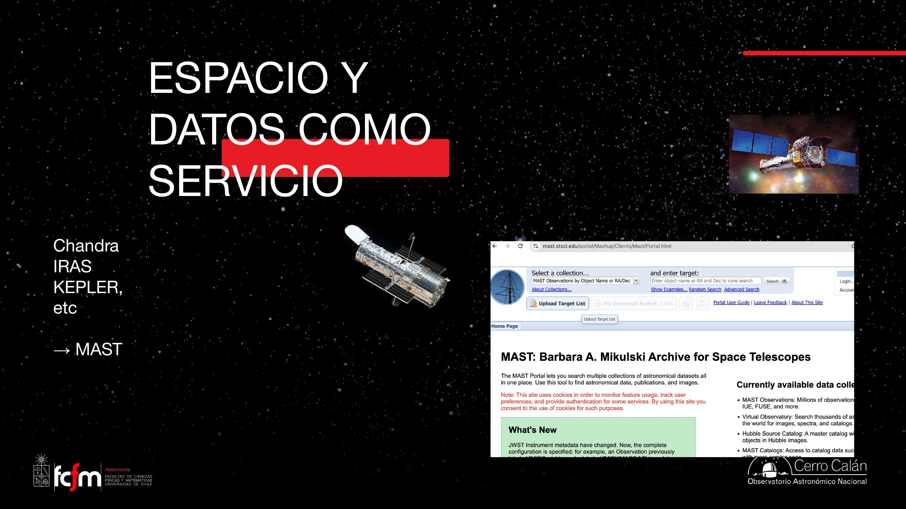
Para que esto funcione a escala global hace falta interoperar: que los datos de distintos observatorios se puedan combinar. De ahí los Observatorios Virtuales (la alianza IVOA reúne organizaciones de muchos países). El gran desafío, como en cualquier integración de sistemas, es el problema de los estándares: formatos, metadatos y protocolos comunes para que los catálogos «conversen».
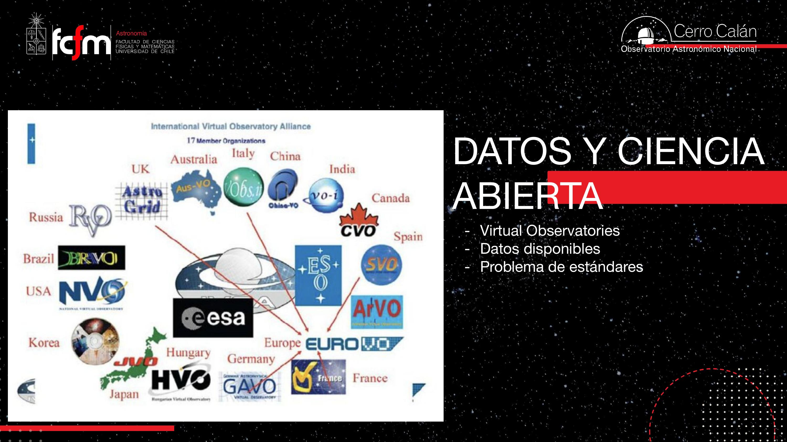
Es exactamente el problema de las APIs y los data lakes: sin esquemas, metadatos y protocolos comunes, los datos no se pueden combinar. La astronomía adoptó temprano un formato estándar (FITS) y principios tipo FAIR (Findable, Accessible, Interoperable, Reusable). El «problema de estándares» de la lámina es el mismo de cualquier arquitectura de integración de datos.
Cómputo: HPC y la naturaleza del dato
Procesar el torrente exige computación de alto rendimiento y entender qué tipo de dato tenemos.
Cuando los datos llegan a petabytes, ya no caben en un laptop ni se procesan en serie. Entra la computación de alto rendimiento (HPC). La lámina la resume en cuatro palabras: Intensive, Parallel, Precise, Visualization.
- Intensiva: simulaciones y reducciones que consumen millones de horas-CPU/GPU.
- Paralela: el trabajo se reparte en miles de núcleos (un cielo se divide naturalmente en regiones independientes — embarrassingly parallel).
- Precisa: control de errores numéricos y reproducibilidad.
- Visualización: convertir tensores enormes en algo que un humano pueda inspeccionar.
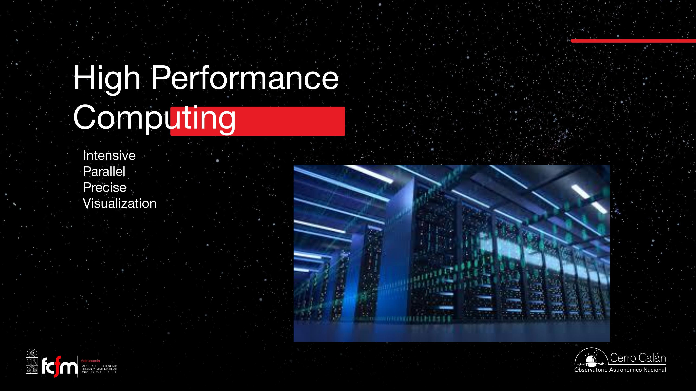
Antes de procesar, hay que entender la naturaleza del dato. La lámina DATA destaca cuatro ejes —Espacio, Disponibilidad, Velocidad, Acceso— que recuerdan las célebres «V» del big data (volumen, velocidad, variedad). Y distingue datos estructurados vs. no estructurados: una tabla SQL ordenada (catálogo) frente a un cúmulo de imágenes, espectros y series temporales heterogéneas.
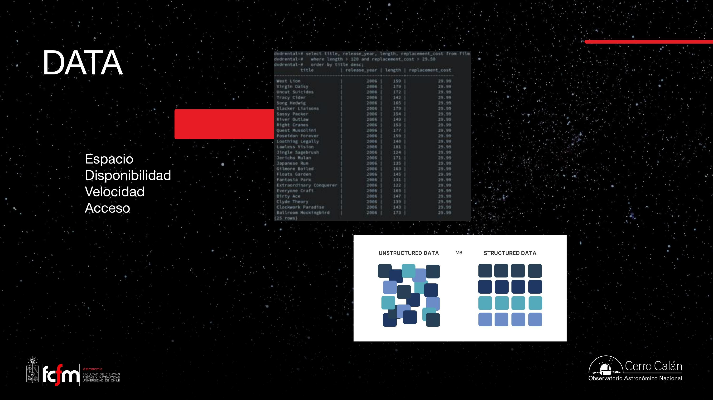
«Espacio/disponibilidad/velocidad/acceso» mapea casi 1:1 a las V (volumen, velocidad, variedad, veracidad). El flujo astronómico es un pipeline ETL clásico: extraer (telescopio), transformar (reducir/calibrar) y cargar (catálogo consultable). Una vez que el dato es una tabla indexada, una query SQL reemplaza meses de mirar placas.
Machine Learning y ciencia abierta
Demasiados datos para mirarlos a mano: clasificadores automáticos y, donde la máquina falla, voluntarios humanos.
Con millones de objetos por noche, clasificar a mano es imposible. Entra el machine learning. La lámina ordena el campo en círculos anidados: IA ⊃ Machine Learning ⊃ Deep Learning ⊃ IA Generativa. En astronomía se usa para clasificar galaxias y transientes, separar estrellas de galaxias, estimar redshifts fotométricos, detectar anomalías y filtrar las alertas de surveys como LSST.
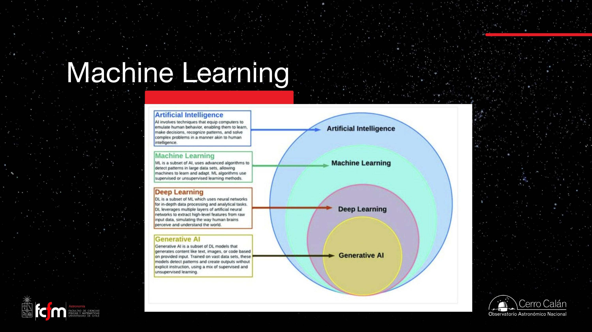
Pero la máquina no lo resuelve todo: hay tareas donde el ojo humano (y la intuición) aún ganan, sobre todo para etiquetar datos de entrenamiento o detectar lo verdaderamente inesperado. Ahí entra la ciencia ciudadana: proyectos como Galaxy Zoo reclutan a miles de voluntarios para clasificar galaxias. Esas etiquetas humanas, además, sirven para entrenar los modelos de ML — un círculo virtuoso.
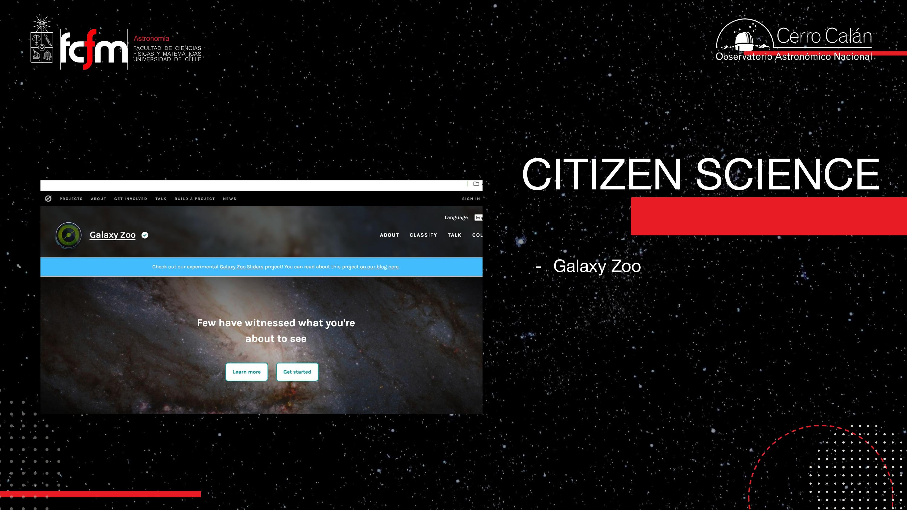
En aprendizaje supervisado, el limitante rara vez es el algoritmo: es conseguir datos etiquetados de calidad. Galaxy Zoo es esencialmente una operación de human-in-the-loop labeling a escala masiva. El patrón —humanos etiquetan, modelos aprenden, modelos pre-filtran para que los humanos se concentren en lo difícil— es el mismo de cualquier proyecto serio de ML.
El futuro: ELTs y el espacio
Telescopios extremadamente grandes en tierra y observatorios en órbitas lejanas: más área, más datos.
La lámina de futuro apunta a los telescopios extremadamente grandes (ELTs): E-ELT (~39 m, ESO, Chile), TMT (Thirty Meter Telescope) y GMT (Giant Magellan Telescope, también en Chile). Cada salto de diámetro multiplica el área colectora (que crece como ) y, con ella, el volumen de datos. La sigla «QM» de la lámina queda ambigua en el material (posiblemente «quantum» o un proyecto específico); se deja anotada sin sobreinterpretar.
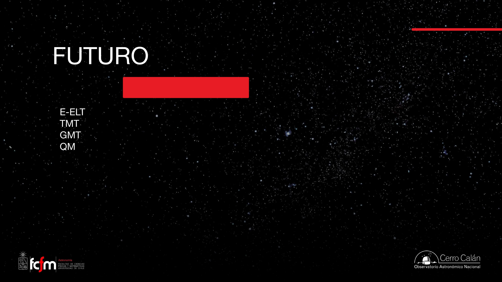
En paralelo, el espacio permite observar fuera de la atmósfera y en órbitas lejanas. El JWST orbita el punto de Lagrange L2, a ~1,5 millones de km de la Tierra (la Luna está ~10× más cerca). Comunicarse con instrumentos tan lejanos exige la Deep Space Network (antenas en Goldstone, Madrid y Canberra): tres estaciones repartidas en longitud para que, con la rotación de la Tierra, siempre haya una «viendo» la nave.
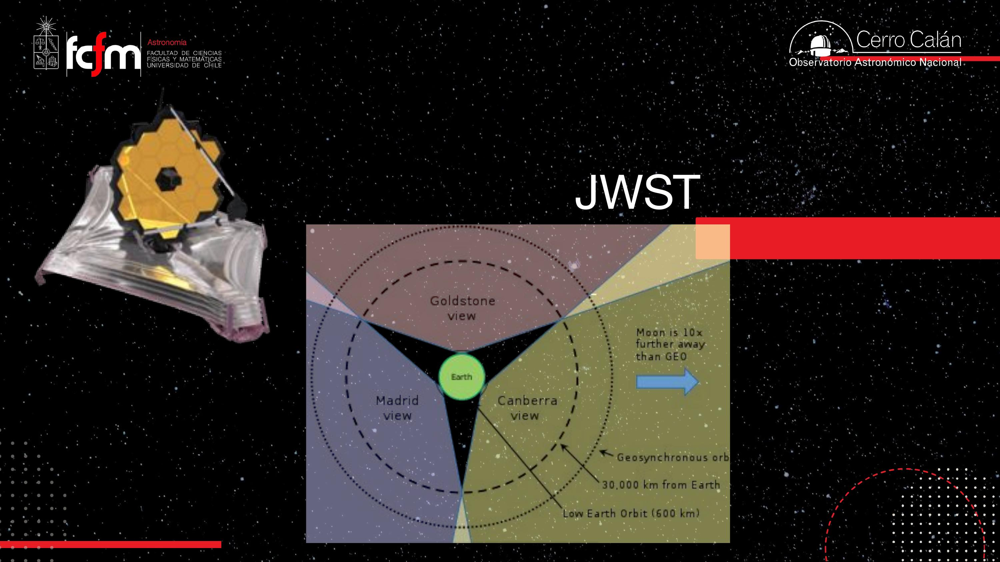
El hilo de toda la clase: cada salto en detectores y telescopios multiplica los datos, y el cuello de botella se desplaza del fotón al cómputo. Del ojo a la placa, de la placa al CCD, del CCD a los gigapíxeles; de mirar una placa con lupa a consultar archivos petabyte con SQL, correlacionar antenas, entrenar redes neuronales y coordinar voluntarios. Para un ingeniero informático, la astronomía moderna es un laboratorio de lujo de big data: volumen, velocidad, variedad, pipelines, HPC y ML, aplicados a la pregunta más antigua de todas —qué hay ahí afuera.
Conceptos clave
Tabla de repaso rápido.
| Concepto | Qué es / valor | Por qué importa |
|---|---|---|
| Etapas históricas | Ojo → placa → digitalización → computación | El cuello de botella pasa del detector al cómputo |
| Placa fotográfica | Soporte físico, ~1 % de eficiencia | Primer registro permanente; «agujas en pajares» |
| Ley de Moore | Transistores ×2 cada ~2 años | Una de las dos exponenciales que disparan los datos |
| Área colectora | Crece como , de Galileo a E-ELT | Más fotones; la otra exponencial |
| Cámara LSST | 189 sensores × 16 Mpx ≈ 3,2 Gpx | El gigapíxel como unidad de imagen |
| Prefijos K–E | Decimal vs binario | La diferencia se acumula hasta >10 % en exabytes |
| Survey | Barrido sistemático del cielo | SDSS 40 TB → LSST ~200 PB → SKA ~4,6 EB |
| Compromisos | Área vs λ vs profundidad vs nº objetos | Por eso hay muchos surveys, no uno solo |
| LSST / Rubin | Wide-Fast-Deep, 10 años, Cerro Pachón | Una «película» del cielo; alertas en tiempo real |
| Trazas de satélites | Starlink cruzando imágenes | Ruido sistemático nuevo a enmascarar |
| Interferometría | Correlación de antenas; | Sintetiza un telescopio del tamaño de la red |
| VLBI / EHT / SKA | Redes globales de radio | Imagen del agujero negro; exabytes de datos |
| Datos como servicio | MAST, archivos públicos | Observar = a veces, consultar un archivo |
| Observatorio virtual | IVOA, estándares (FITS, FAIR) | Interoperar datos heterogéneos |
| HPC | Intensivo, paralelo, preciso, visualización | Procesar petabytes; cómputo paralelo |
| Estructurado vs no | Tabla SQL vs imágenes/espectros | El trabajo es estructurar lo no estructurado |
| Machine Learning | IA ⊃ ML ⊃ DL ⊃ IA generativa | Clasificar y filtrar a escala |
| Ciencia ciudadana | Galaxy Zoo | Etiquetado humano que entrena modelos |
| ELTs y JWST | E-ELT/TMT/GMT; JWST en L2 | Más área y el espacio profundo → más datos |
Exámenes de práctica
10 exámenes de 5 preguntas (3 de alternativas autocorregibles + 2 de respuesta escrita).
- Examen 01Historia de los detectores
- Examen 02Placas y agujas en pajares
- Examen 03Las dos exponenciales
- Examen 04Digitalización y unidades
- Examen 05Volúmenes de surveys
- Examen 06LSST / Vera Rubin
- Examen 07Radio e interferometría
- Examen 08Datos como servicio
- Examen 09HPC y naturaleza del dato
- Examen 10ML, ciencia abierta y futuro